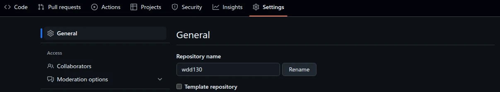
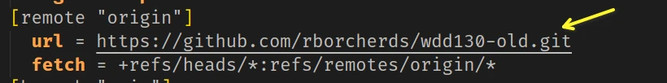

Retaking a Course with GitHub Repetindo um Curso com GitHub Retomando un Curso con GitHub
If you are retaking a course with GitHub, please follow these instructions to set up your computer: Se você está repetindo um curso com GitHub, siga estas instruções para configurar seu computador: Si está retomando un curso con GitHub, siga estas instrucciones para configurar su computadora:
-
Go into GitHub and rename your repository to include "wdd130" and add something descriptive like old or previous such as "wdd130-old". This image shows the entry box and it is found in the repository settings tab / General menu at the top. Acesse o GitHub e renomeie seu repositório para incluir "wdd130" e adicione algo descritivo como "antigo" ou "anterior", como "wdd130-old". Esta imagem mostra a caixa de entrada e ela está na aba de configurações do repositório / menu General no topo. Vaya a GitHub y cambie el nombre de su repositorio para incluir "wdd130" y agregue algo descriptivo como "old" (antiguo) o "previous" (anterior), como "wdd130-old". Esta imagen muestra el cuadro de entrada y se encuentra en la pestaña de configuración del repositorio / menú General en la parte superior.

Once you have typed the new name, click "Rename" button. Depois de digitar o novo nome, clique no botão "Rename". Una vez que haya escrito el nuevo nombre, haga clic en el botón "Rename".
-
Rename the folder on your local computer from wdd130 to match what you renamed the repository to. How you do this will depend on your operating system. Renomeie a pasta no seu computador local de wdd130 para corresponder ao que você renomeou o repositório. Como fazer isso dependerá do seu sistema operacional. Cambie el nombre de la carpeta en su computadora local de wdd130 para que coincida con el nuevo nombre del repositorio. La forma de hacerlo dependerá de su sistema operativo.
-
There is one of three things you can do at this point: Há uma de três coisas que você pode fazer neste ponto: Hay una de tres cosas que puede hacer en este punto:
- Delete the local repository folder and re-clone the renamed repository from GitHub. Excluir a pasta do repositório local e clonar novamente o repositório renomeado do GitHub. Eliminar la carpeta del repositorio local y volver a clonar el repositorio renombrado desde GitHub.
- Edit the .git/config file in the renamed folder to point to the new repository name. Editar o arquivo .git/config na pasta renomeada para apontar para o novo nome do repositório. Editar el archivo .git/config en la carpeta renombrada para que apunte al nuevo nombre del repositorio.
- Use the git command line to set the new URL for the renamed repository. Usar a linha de comando do git para definir o novo URL do repositório renomeado. Usar la línea de comando de git para establecer el nuevo URL del repositorio renombrado.
Here are the instructions for the last two options: Aqui estão as instruções para as duas últimas opções: Aquí están las instrucciones para las dos últimas opciones:
Editing the .git/config file Editando o arquivo .git/config Editando el archivo .git/config
Open the .git folder inside the renamed local repository folder. Inside that folder is a file called config. Open that file in a text editor such as VSCode or Notepad. Abra a pasta .git dentro da pasta do repositório local renomeado. Dentro dessa pasta há um arquivo chamado config. Abra esse arquivo em um editor de texto como VSCode ou Notepad. Abra la carpeta .git dentro de la carpeta del repositorio local renombrado. Dentro de esa carpeta hay un archivo llamado config. Abra ese archivo en un editor de texto como VSCode o Notepad.
Find the line that starts with "url = " and change the URL to match the new repository name on GitHub. Encontre a linha que começa com "url = " e altere o URL para corresponder ao novo nome do repositório no GitHub. Encuentre la línea que comienza con "url = " y cambie el URL para que coincida con el nuevo nombre del repositorio en GitHub.

You can get the new URL by opening the repository on GitHub and copying the URL from the address bar and add .git at the end like the image above. Você pode obter o novo URL abrindo o repositório no GitHub e copiando o URL da barra de endereços e adicionando .git no final, como na imagem acima. Puede obtener el nuevo URL abriendo el repositorio en GitHub y copiando el URL de la barra de direcciones y agregando .git al final, como en la imagen de arriba.
This process will allow you to keep the old code in sync with GitHub. Este processo permitirá que você mantenha o código antigo sincronizado com o GitHub. Este proceso le permitirá mantener el código antiguo sincronizado con GitHub.
Using the git command line to set the new URL Usando a linha de comando do git para definir o novo URL Usando la línea de comando de git para establecer el nuevo URL
Open a terminal in VSCode. On Windows you use Ctrl+` and on a MAC you use ⌃` or you can use the menu option VIEW - Terminal. Abra um terminal no VSCode. No Windows, use Ctrl+` e no MAC, use ⌃` ou você pode usar a opção de menu VIEW - Terminal. Abra un terminal en VSCode. En Windows use Ctrl+` y en MAC use ⌃` o puede usar la opción de menú VIEW - Terminal.
Once the terminal is open, type the following command, replacing the NEW-URL with the new repository URL: Depois que o terminal estiver aberto, digite o seguinte comando, substituindo NEW-URL pelo novo URL do repositório: Una vez que el terminal esté abierto, escriba el siguiente comando, reemplazando NEW-URL con el nuevo URL del repositorio:
git remote set-url origin NEW-URL
Now continue with the rest of the setup instructions found at Agora continue com o restante das instruções de configuração encontradas em Ahora continúe con el resto de las instrucciones de configuración que se encuentran en https://byui-cse.github.io/wdd130-ww-course/week01/setup-github.html#create-repo Step 2. This link will take you directly to Step 2 Passo 2. Este link levará você diretamente ao Passo 2 Paso 2. Este enlace lo llevará directamente al Paso 2